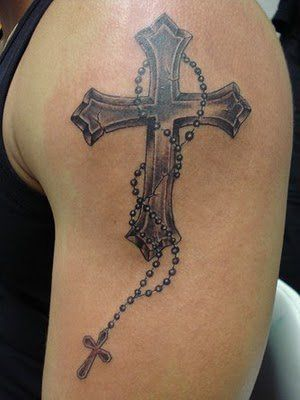
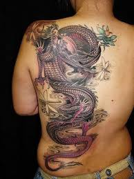
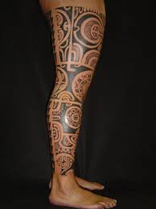
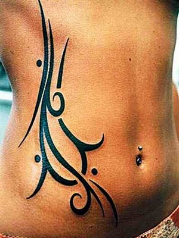
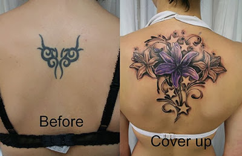
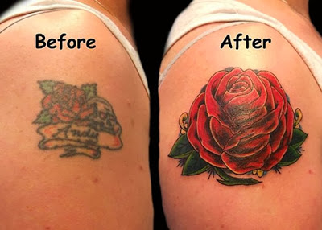
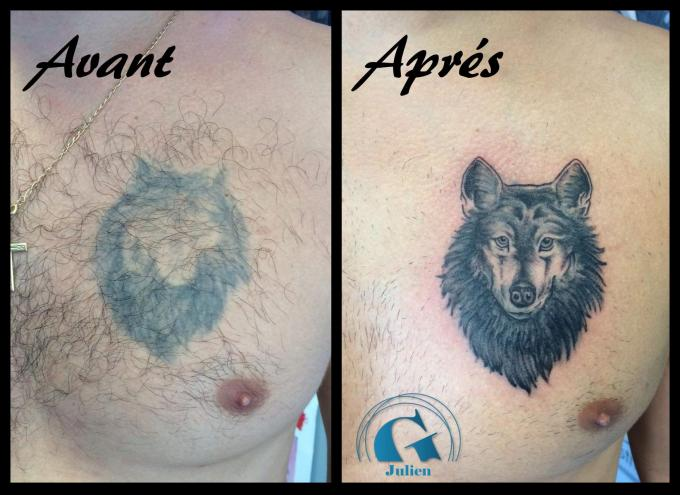
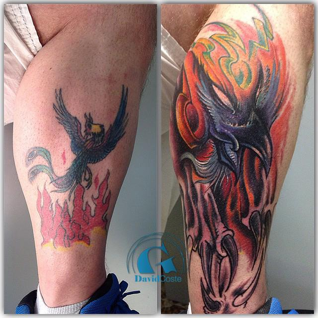

Galerie Tatouage
Tatouage
Croix sur bras
- Donne un air badass
- peut passer dans une église
- donne +2 de réputation au Vatican
- Faite avec un encre bénite

Prix : 250€
dragon sur le dos
- donne un air de yakusa
- peut être douleureux
- attention au doovahkiin
- les reptiles sont à la mode

Prix : 450€
Tatouage polinesien sur jambe
- donne un côté exotique des îles
- est très graphique
- bien pour le surf
- est mieux qu'un souvenir

Prix : 500€
Tatouage tribal sur le ventre
- Donne un côté je ne sais quoi
- pour les bad boys en herbe
- pour avoir l'air badass
- deconseillé pour les femmes enceintes, peut se décalcer sur l'enfant

Prix : 200€
Recouvrement
recouvrement avec fleur
- permet de recouvrir avec une fleur
- faut pas que ce soit trop gros
- permet de cacher quelque chose de compromettant
- je sais plus trop quoi dire

Prix : 250€
fleur sur épaule
- donne une belle rose sur l'epaule
- bien pour cacher quelque chose
- c'est coloré
- c'est girly

Prix : 350€
loup sur torse
- donne un côté baroudeur
- tatouage discret
- pensez à sif
- pour les loups solitaires

Prix : 300€
phenix sur jambe
- pour les renaissants
- donne de belles jambes
- donne un style de feu
- Attention au chat

Prix : 400€